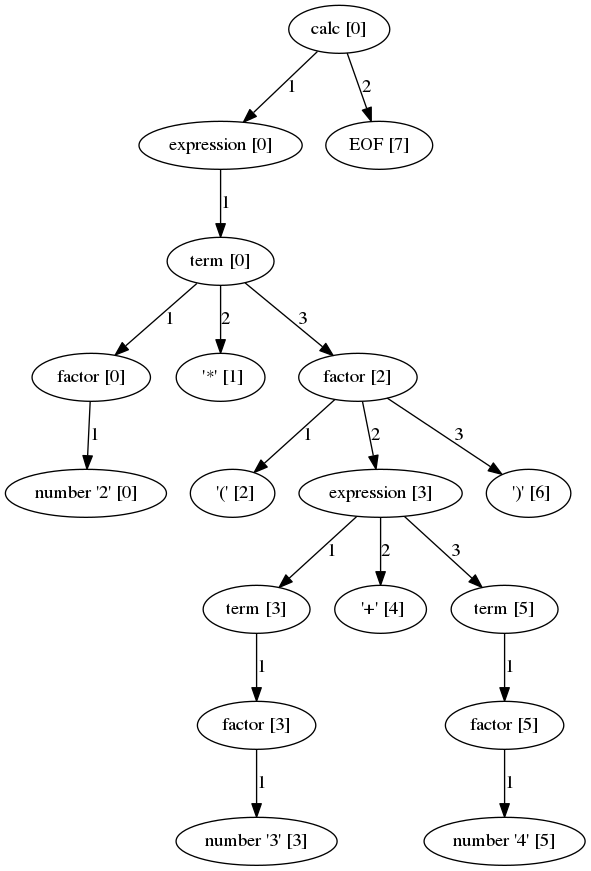

Maciej Dziardziel (fiedzia@gmail.com)
(programming languages are out of scope of this presentation, but you can use the tools we discuss today to design and process them)
Conditions: title "python" and ("developer" or "programmer") Actions: add category "it/developers/python"
if "python" in job.title and ("developer" in job.title or "programmer" in job.title): job.categories.add("it/developers/python")
#cat code1_python_function.py def is_it_python_job(job): if "python" in job.title and ("developer" in job.title or "programmer" in job.title): job.labels.add("it/developers/python")
import code1_python_function code1_python_function.is_it_python_job >>> <function code1_python_function.is_it_python_job> type(code1_python_function.is_it_python_job.__code__) >>> code import dis dis.dis(code1_python_function.is_it_python_job) >>> 0 LOAD_CONST 1 ('python') >>> 3 LOAD_FAST 0 (job) >>> 6 LOAD_ATTR 0 (title) >>> 9 COMPARE_OP 6 (in) >>> ...
code1_python_function.is_it_python_job.__code__.co_code >> b'd\x01\x00|\x00\x00j\x00\x00k\x06\x00r@\x00d\x02\x00|\x00\x00j\x00\x00k\x06\x00s-\x00d\x03\x00|\x00\x00j\x00\x00k\x06\x00r@\x00|\x00\x00j\x01\x00j\x02\x00d\x04\x00\x83\x01\x00\x01n\x00\x00d\x00\x00S'
Help on function parse in module ast:
parse(source, filename='<unknown>', mode='exec')
Parse the source into an AST node.
Equivalent to compile(source, filename, mode, PyCF_ONLY_AST).
import ast expr = ast.parse("2+2", "", "eval") ast.dump(expr) >>> 'Expression(body=BinOp(left=Num(n=2), op=Add(), right=Num(n=2)))' list(ast.walk(expr)) >>> [<_ast.Expression at 0x7efef1c30630>, >>> <_ast.BinOp at 0x7efef1c306a0>, >>> <_ast.Num at 0x7efef1c30a90>, >>> <_ast.Add at 0x7efef4f03da0>, >>> <_ast.Num at 0x7efef1c306d8>] expr = ast.parse('"python" and ("developer" or "programmer")', "", "eval") ast.dump(expr) >>> "Expression(body=BoolOp(op=And(), values=[Str(s='python'), BoolOp(op=Or(), values=[Str(s='developer'), Str(s='programmer')])]))"
import ast ALLOWED_AST_NODES = (ast.Module,ast.Expression, ast.And, ast.Or, ast.Expr, ast.Str, ast.BoolOp, ast.UnaryOp, ast.Not) def check_expr(expr_str): parsed = ast.parse(expr_str, '<rule>', 'eval') for node in ast.walk(parsed): if type(node) not in ALLOWED_AST_NODES: raise Exception('node type not allowed: {node_type}'.format(node_type=type(node))) check_expr('"python" and "developer"') >>> check_expr('print(3)') >>> Exception: node type not allowed: <class '_ast.Call'>
class ASTConvertStrToCall(ast.NodeTransformer): """Transform 's' into contains('s')""" def visit_Str(self, node): return ast.copy_location( ast.Call( func=ast.Name(id='contains', ctx=ast.Load()), args=[ast.Str(node.s)], keywords=[] ), node ) parsed = ast.parse(expr_str, '<rule>', 'eval') tree = ASTConvertStrToCall().visit(parsed) ast.fix_missing_locations(tree) compiled = compile(tree, "<rule>", "eval") namespace = {} return eval(compiled, namespace)
code2_python_full_example.py
What we want:
https://wiki.python.org/moin/LanguageParsing
http://igordejanovic.net/Arpeggio/
number = r'\d*\.\d*|\d+' factor = ("+" / "-")? (number / "(" expression ")") term = factor (( "*" / "/") factor)* expression = term (("+" / "-") term)* calc = expression+ EOF

code3_arpeggio_calc.py
"python" and ("developer" or "programmer")
phrase = r'"[a-z]*"' negation = r'not' factor = (phrase / "(" expression ")") neg_factor = negation factor term = (factor/neg_factor) ( "and" (factor / neg_factor))* neg_term = negation term expression = (term / neg_term) ("or" (term / neg_term))* neg_expression = negation expression query = (expression/ neg_expression)+ EOF
See code4_arpeggio_query.py
/